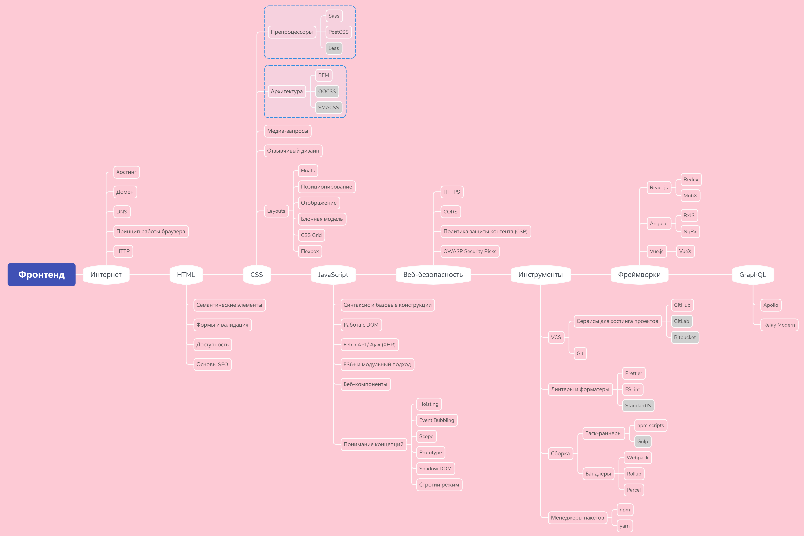

Как стать фронтенд-разработчиком и что изучать в 2022 году? В этом поможет разобраться дорожная карта по фронтенду:
Профессиональные навыки
Как и прежде, фронтенд-разработка стоит на трёх китах — HTML, CSS и JavaScript.
HTML
Без понимания разметки дальше не продвинуться, ведь это каркас сайта. Вы должны изучить базовые теги и атрибуты, понимать анатомию HTML-разметки, а также быть в курсе доступности и основ SEO. Не забывайте и об HTML5 — пятой версии, которая встречается в требованиях каждой первой вакансии. Развитие HTML нельзя назвать быстрым, поэтому у вас будет большое преимущество, если вы уже знаете язык разметки.
Материалы для изучения HTML:
CSS
Также важно научиться стилизовать элементы с помощью CSS и делать это правильно, например повторно используя стили для одинаковых элементов. Сперва освойте блочную модель и позиционирование содержимого — компоновку, выравнивание и центрирование элементов, а также их видимость. Почитайте об адаптивном и отзывчивом дизайне. Далее переходите к медиа-запросам, чтобы учитывать технические параметры различных устройств. Неплохим бонусом станет навык работы с CSS Grid и Flexbox. После углубляйте знания, изучая архитектуру и препроцессоры.
Материалы для изучения CSS:
- Основы CSS
- Функциональный CSS: упрощаем работу со стилями
- О CSS Grid и Flexbox простыми словами
- Игра-практика Grid Garden и CSS Diner
- 18 советов по CSS, которые сделают жизнь разработчика проще
Чтобы получить первые практические навыки в работе с HTML и CSS, следует сверстать несколько страниц: это можно сделать как по шаблонам из приведённых статей, так и написать полностью самостоятельный проект.
JavaScript
Ну и как же стать фронтенд-разработчиком, не зная в 2022 году JavaScript? На «плечи» этого языка ложится функциональность сайта: действия по нажатию кнопок, заполнение форм, прослушивание событий, запуск триггеров и многое другое. Не стоит пренебрегать основами и сразу переходить к изучению «модного» фреймворка — изучайте язык постепенно.
Так, вам потребуется освоить синтаксис и базовые конструкции. Обратите внимание, что JavaScript — язык со слабой типизацией, то есть выполняет неявное преобразование типов автоматически. Это значит, что вы можете написать что-то вроде 10+"1" и не получить никакой ошибки. Напротив, результат будет строкой — 101. Вы можете почитать об этом подробнее в большом исследовании под названием WTF JavaScript .
Ну а мы вернёмся к дорожной карте по фронтенд-разработке. Важно освоить DOM, интерфейс для работы с HTTP-запросами и ответами Fetch API, технологию AJAX и XMLHttpRequest, ECMAScript 6+, модульный подход и веб-компоненты. Также пробегитесь по перечисленным концепциям вроде строгого режима и теневого DOM.
Материалы для изучения JavaScript:
Веб-безопасность
Знаете, что такое OWASP? Это открытый проект, собирающий статистику и направленный на обеспечение безопасности веб-приложений. Чтобы стать фронтенд-разработчиком в 2022 году, нужно уделять особое внимание безопасности. Хоть способов обезопасить себя и становится больше, но злоумышленники тоже не стоят на месте.
Итак, вам нужно понимать преимущества HTTPS перед HTTP, принцип работы CORS, политику защиты контента (CSP), а также регулярно следить за обновлениями на сайте OWASP .
Почитайте наши статьи о том, как защитить веб-приложение и какие инструменты для пентеста используют специалисты в сфере ИБ.
Инструменты
Здесь всё просто:
Фреймворки
3 основных фреймворка в работе с фронтендом:
- React.js
- Angular
- Vue.js
Хорошее сравнение можно найти в этой статье . Для тех, кто желает освоить React с нуля, предлагаем понятную дорожную карту по React-разработке.
Отдельно рекомендуем подкасты по новинкам в мире веб-разработки от CSSSR, так как ребята часто затрагивают веб-фреймворки.
GraphQL
Это основной язык API-запросов фронтенд-разработчиков. Платформа Apollo в свою очередь представляет собой реализацию GraphQL для транспортировки данных из облака к UI веб-приложения, а Relay Modern — это фреймворк, использующий GraphQL и предназначенный для работы с data-driven приложениями.
Заключение
Итак, чтобы стать фронтенд-разработчиком в 2022 году, следует хорошо владеть HTML, CSS и JavaScript, уметь обеспечивать безопасность веб-приложений, владеть основными инструментами, такими как Git, Prettier, ESLint, npm scripts и Webpack, изучить хотя бы один из основных JavaScript-фреймворков и получить навык работы с GraphQL. Но ни в коем случае не останавливайтесь на этом. Например, всё чаще компании нанимают именно фулстек-девелоперов, поэтому рекомендуем также ознакомиться с дорожной картой по бэкенд-разработке и роадмапом по JavaScript.